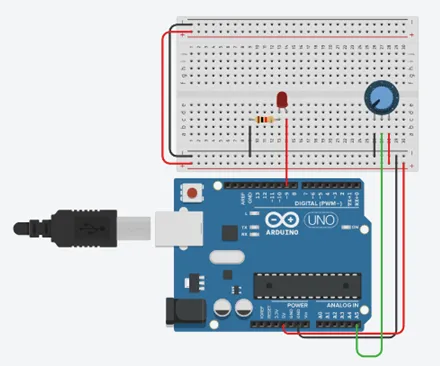

Um sensor analógico no Arduino é um dispositivo que converte uma grandeza física, como luz, temperatura ou pressão, em um sinal elétrico variável. Esse sinal pode ser lido pelo Arduino através de suas entradas analógicas, permitindo medições precisas e contínuas do ambiente. Ao contrário dos sensores digitais, que fornecem apenas valores binários (ligado/desligado), os sensores analógicos oferecem uma ampla gama de valores, possibilitando uma maior precisão nas medições. Eles são comumente utilizados em uma variedade de projetos que requerem monitoramento e controle baseados em entradas físicas.
Sensor Analógico
